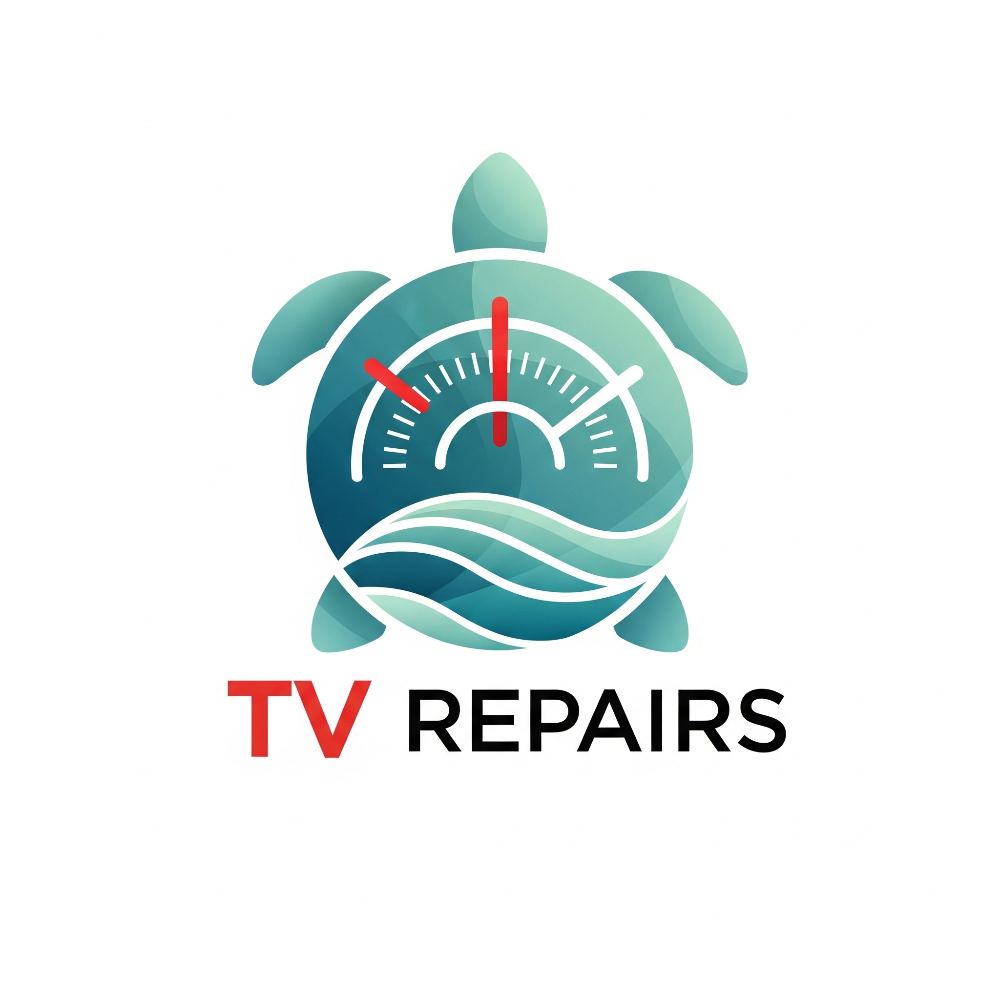
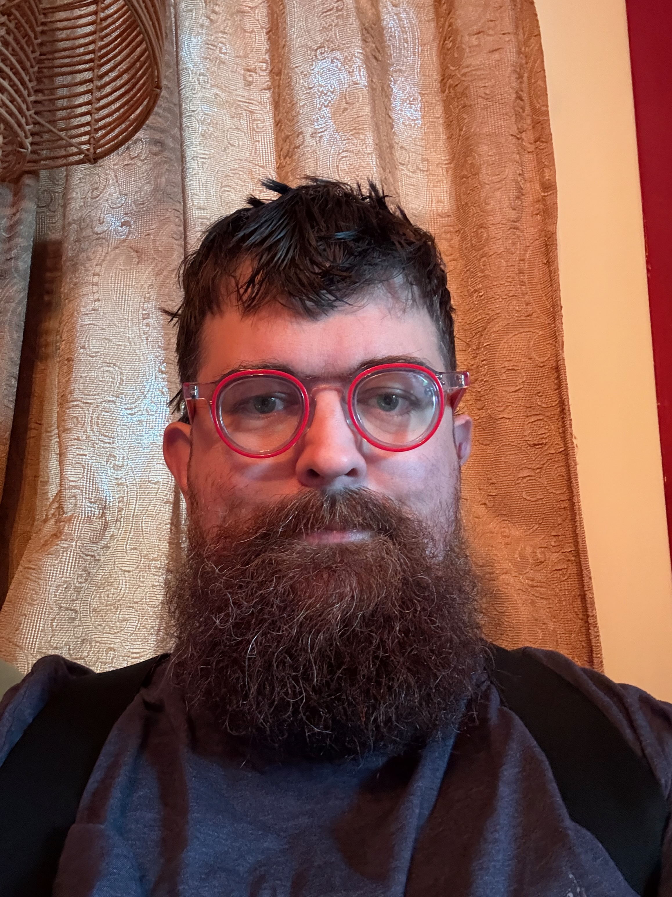

Tuning In
Learn to listen to your body's signals and find your "clear channel." We work together to remove static, reduce stress, and clarify your health goals.

TV Repairs CoachingWelcome. I'm Comrade Tom. I help you remove the static from your life, find your frequency, and build steady, lifelong health habits.
Meet Comrade Tom
The "TV" in TV Repairs
Hello! I'm Comrade Tom (he/they). I serve as an affirming, non-judgmental thinking partner for high-achievers navigating the tension between the life they have and the life they want.
My professional background is rooted in community advocacy and social impact. I’ve raised millions for housing in Iowa, advocated for LGBTQ+ equity at the PFund Foundation, supported North Minneapolis through the pandemic, and spent years in tech consulting building complex systems. Through these high-pressure environments, I realized that while I could build external systems, the most vital work happens within the individual.
That's where the idea of "TV Repairs" comes from. As a student of Integrative Health and Wellbeing Coaching at the University of Minnesota’s Bakken Center, my goal isn't to be a "sage" with all the answers. Instead, I operate from a place of unconditional positive regard—recognizing that you are the expert in your own life.
We work together to adjust the dial, clear the static, and resolve the "internal tango" of indecision that keeps you from your next right step.
You might notice the turtle theme across my site. To me, the turtle represents a recovery and alignment that is grounded, protected, and steady. Quick fixes give a burst of progress, but taking the steady path builds habits that last a lifetime.
Any shift that happens is yours to claim. I am simply here to clear the path and support the changes you choose to make.
Learn to listen to your body's signals and find your "clear channel." We work together to remove static, reduce stress, and clarify your health goals.
1-on-1 coaching directly with Comrade Tom to troubleshoot lifestyle roadblocks, fine-tune your daily routines, and restore your natural energy.
Slow and steady wins the race. We focus on micro-habits that compound over time for incredible, lasting health transformations, without the quick-fix burnout.
I am a guide by the side for those navigating big transitions.
You carry the weight of the world, often asking yourself to ignore your own needs. We work to resolve the exhaustion of feeling out of sync with your own heart.
As an advocate for LGBTQ+ equity, I provide a fiercely affirming, deeply empathetic space tailored to the unique transitions and challenges of queer life.
You know there is a gap between the life you have and the life you want, but the "internal tango" of indecision is keeping you frozen. Let's fix the antenna.
Realignment doesn’t happen overnight, but it begins with a single conversation.
We start with an honest, non-judgmental chat. We'll identify the "static" in your current routines, discuss your values, and decide if we are a good fit to work together.
You are the expert in your life. I act as an affirming thinking partner to help you challenge your own assumptions, build autonomy, and design a customized, steady path forward.
Like the turtle, we focus on resilient, grounded progress. We implement micro-habits and adjust as we go, ensuring the changes stick for a lifetime without burnout.
Read my latest thoughts on finding your clear channel.
Loading latest posts...
Ready to tune into your clear channel? Send me a message, and we'll chat about how my coaching can help you build steady, lasting health habits.